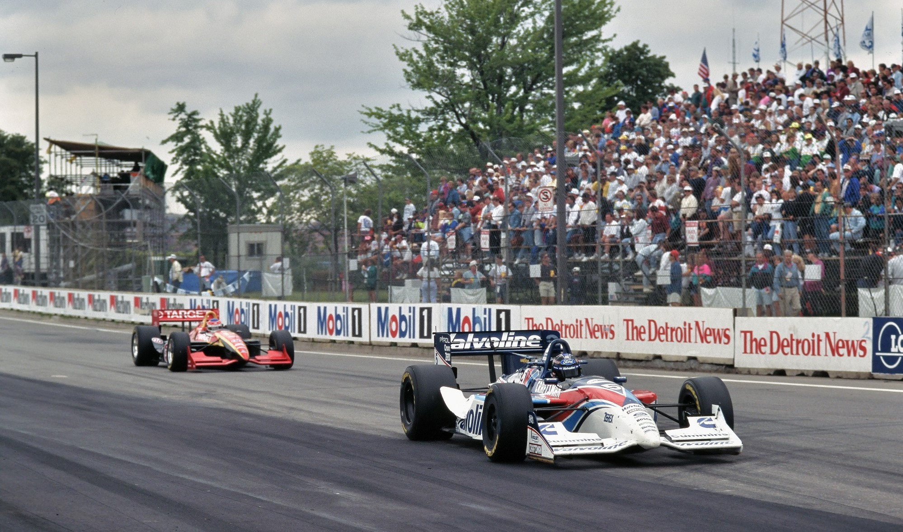
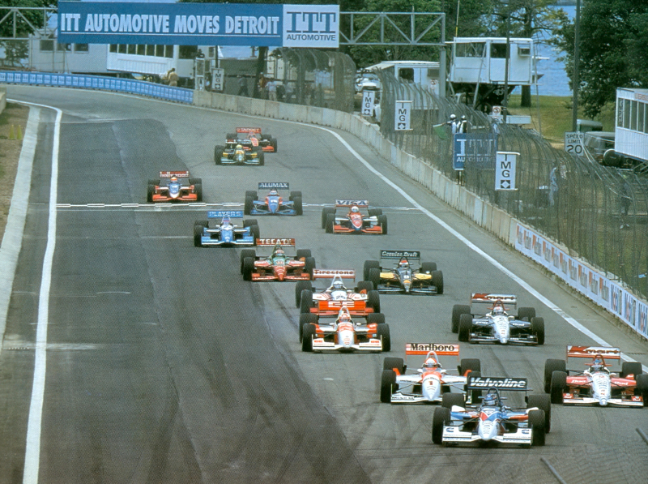
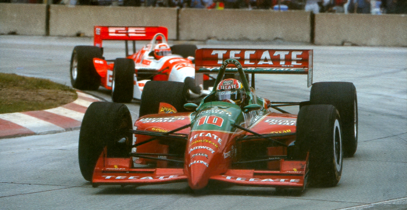
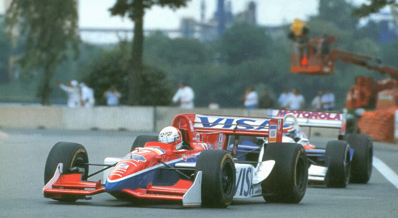
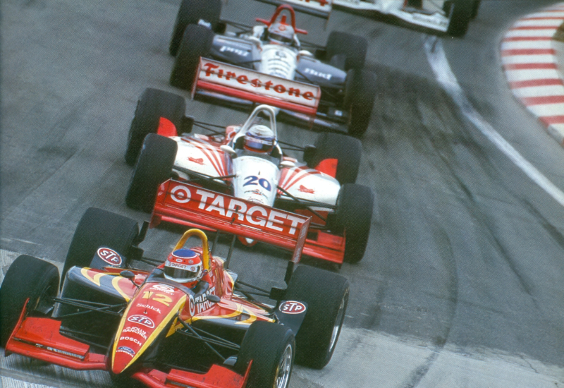
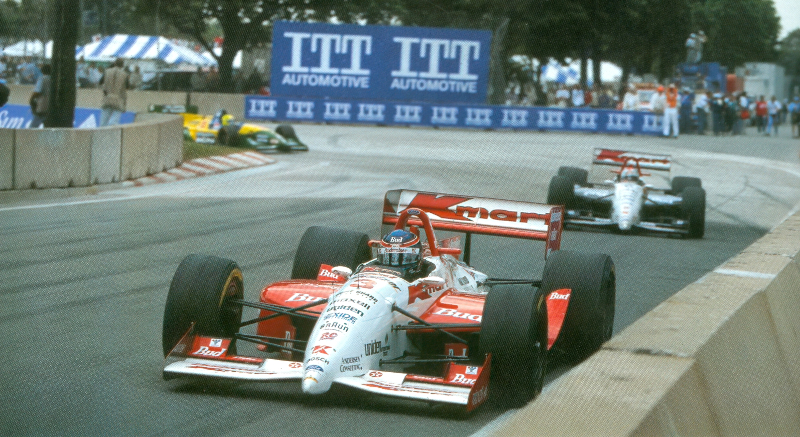
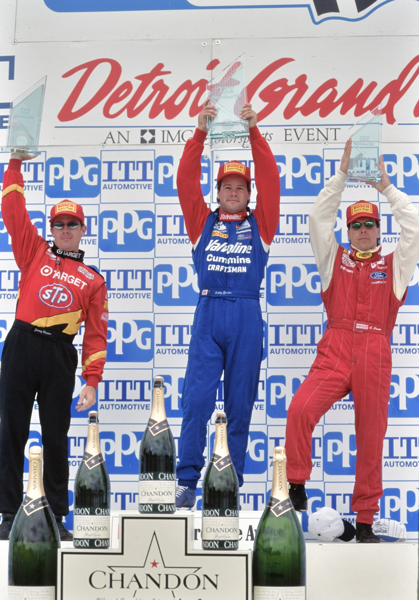

BOA ESTRATÉGIA E SORTE PARA GORDON

O pitoresco circuito temporário de rua desenhado dentro do Belle Isle Park proporciona um teste interessante para as capacidades dos pilotos, ainda que o seu traçado tortuoso permita poucas e preciosas oportunidades para ultrapassar. Grande ênfase é dada, por isso, na qualificação e na posição em pista. Largar na frente do pelotão assegura pista livre para o líder da corrida, por isso a velocidade de ponta é importante, enquanto no dia da corrida, assumindo que o detentor da pole pode fazer uma largada limpa, a enfâse é mais a eliminação de quaisquer erros. A estratégia nos reabastecimentos também é provável que desempenhe um papel crítico na determinação do resultado. E especialmente a escolha do momento desses pit stops. Robby Gordon e a sua equipe Walker Racing estiveram perfeitos no ITT Automotive Detroit Grand Prix deste ano. O californiano de 26 anos reconheceu a importância de largar na frente com o Valvoline/Cummins Reynard-Ford/Cosworth de Derrick Walker, e mesmo que tenha caído para a quinta posição depois se ter deparado com problemas de pneus no inicio, uma inspirada chamada ao box, um golpe de sorte e uma sagaz gestão do combustível possibilitaram que Gordon reconquistasse a vantagem pouco depois do meio da corrida de 77 voltas. Gordon cuidou do resto, recusando ser distraído por uma fila de carros nos seus espelhos e aguentou-se até obter uma merecida vitória. Jimmy Vasser empregou uma estratégia idêntica na rota para o seu melhor resultado até à data para o Chip Ganassi Racing Team, apoiado pela Target, enquanto Scott Pruett mereceu o outro lugar do pódio após outra boa prova no Firestone Lola-Ford de Pat Patrick.

QUALIFICAÇÕES
A Newman-Haas Racing procurava sua sétima pole consecutiva na Capital do Automóvel. Michael Andretti tinha reivindicado a honra nas quatro primeiras vezes que se disputou a corrida, incluindo três vezes na prova no centro da cidade, enquanto Nigel Mansell continuou a sequência ao se qualificar como o mais rápido em cada uma de suas duas visitas a Belle Isle. Andretti, agora regressado à equipe após dois anos sabáticos, respondeu ao estabelecer o melhor tempo na sessão de 6ª feira. Depois decidiu concentrar-se no pneu "opção" da Goodyear. que era ligeiramente mais duro do que a mistura "recomendada", e, apesar disso, sentiu que tinha um bom tempo na pole até se emaranhar com Gordon, a apenas poucos minutos do final da sessão de sábado à tarde. "Ele tentava sair do meu caminho," disse Andretti, "por isso eu não me posso enfurecer demasiado. Ele não sabia para onde ir. Quando eu estava ao lado dele, ele perdeu controle. Eu quase conseguir safarme mas dei-lhe um toque com a minha roda traseira." O incidente permitiu que o tempo de Gordon na 6a feira não fosse batido, embora a margem fosse reduzida, pois Al Unser Jr. efetuara uma melhoria substancial, ficando a poucos décimos de Gordon. "Toda a gente se arrepiou com o meu tempo durante a sessão," disse Gordon. "Comecei a ficar preocupado que alguém me desalojasse da pole. Unser foi o mais rápido na segunda sessão, mas teve de se contentar com o lugar de fora na primeira linha. "Nós continuamos a trabalhar com o carro e melhorámos," disse Unser. "Não me quis arriscar a ter um acidente só para obter dois décimos de segundo. Estamos defintivamente preparados para a corrida." Teo Fabi prosseguiu sua performance de pole em Milwaukee com outro belo esforço. Os próximos que se seguiam nesta excitante sessão final foram Pruett, que conseguiu melhorar o seu tempo de 6ª feira quando mudou para os pneus Firestone mais macios, e Andretti. Adrian Fernandez também esteve muito bem, e conseguiu o seu melhor lugar no grid da temporada.

CORRIDA
Raul Boesel nunca teve muita boa sorte desde a mudança para a Rahal/Ho-gan Racing no inverno. Em Detroit nem largou, devido a um motor quebrado. Bryan Herta não se arranjou melhor, um tubo de escape quebrado causou um incêndio na traseira do seu Reynard Target/Scotch Video, na volta inaugural. O abandono do Duracell Lola de Boesel trouxe as bandeiras amarelas a meio da volta inaugural. Já se tinham efetuado algumas alterações de realce a partir da ordem original do grid. Gordon mantivera a vantagem, agora era seguido por Tracy, que na primeira curva executou uma ultra-passagem audaciosa por fora sobre Fabi e Unser. Andretti seguiu o seu colega de equipe na ultrapassagem a Fabi, relegando o descontente italiano para quinto na frente de Pruett e Bobby Rahal, que passou Fernandez. O restart foi muito mais ordeiro. Gordon assumiu a liderança novamente, embora não fosse capaz de impedir os avanços do conjunto perseguidor. Na 7a volta, os oito primeiros carros permaneciam numa formação muito apertada. A próxima alteração signiíicante surgiu na 8a volta, quando Unser utilizou as excelentes caraterísticas de tração do seu Penske na saída da Curva 12, depois mergulhou para o interior de Tracy na freada para a Curva 14. Foi uma ultrapassagem magnificamente bem executada. Unser repetiu a manobra na volta seguinte. Desta vez Gordon foi a vítima. Atrás deles, Andretti procedeu a uma manobra idêntica sobre Tracy. Unser rapidamente se distanciou de Gordon, que já estava a debater-se com a perda de aderência dos seus pneus. Na volta seguinte, o pole era ultrapassado por Andretti e Tracy, que conseguiram aproximar-se de Unser com uma rapidez incrível. Claramente, a equipe Newman-Haas tinha feito uma escolha astuta ao decidir correr com pneus Goodyear mais duradouros. "Estavamos definitivamente em dificuldades com o nosso primeiro jogo de pneus," admitiu Gordon. "Eu tinha feito as qualificações com esses pneus, e sendo um pneu mais macio, eles estavam gastos após 24 voltas. Eu ansiei por um interrupção para poder mudar para uma mistura mais dura." O desejo de Gordon concretizou-se na 14a volta. Unser, que também tinha lutado por aderência, aproveitou-se de uma oportunidade para fazer um pit stop, como o fez a maioria do pelotão. Surpreendentemente, Andretti e Tracy também reabasteceram, e, por isso, Unser, agora com pneus mais duros, voltou na frente. Unser rapidamente tomou controlo da corrida, afastando-se claramente de Tracy, que tinha usurpado o 2° lugar a Andretti graças a um reabastecimento ligeiramente mais rápido. Mais atrás, as esperanças de Rahal de uma boa classificação foram desfeitas por um incidente no pit-lane. O problema foi provocado por Fabi que inadvertidamente foi embater na traseira de Maurício Gugelmin, que depois resvalou para o lado do Miller Genuine Draft Lola-Mercedes, furando o seu radiador.

O momento decisivo da corrida sucedeu na 47a volta, seguindo-se a um acidente na Curva 14 envolvendo Christian Danner e Carlos Guerrero. Os três primeiros — Unser, Tracy e Andretti — escolheram permanecer em pista. "Não fazia sentido reabastecer," explicou Roger Penske, que, como habitual, determinava a estratégia do carro de Unser. "Não estavamos na reserva. Se não houvesse outra bandeira amarela, teriamos de reabastecer outra vez." A Newman-Haas prosseguiu a sua política de seguir a liderança de Unser. Assim, quando Unser escolheu não parar, o mesmo fizeram Tracy e Andretti. Derrick Walker, por contraste, estava preparado para jogar os dados. Chamou Gordon ao box para um reabastecimento, apesar de saber que só um outro período prolongado de interrupção é que permitiría a Gordon chegar ao fim da corrida sem um pit stop extra. O veterano gerente de equipe Jim McGee seguiu a mesma estratégia com o seu homem, Pruett, como o fez Tom Anderson com Vasser. Quatro voltas depois, com o pelotão ainda circulando atrás do pace car, Penske decidiu adotar a mesma estratégia. Andretti e os restantes, seguindo como cordeiros — todos, isto é, menos Tracy, que estava tão colado a Unser que não pode reagir com a rapidez suficiente quando o líder abrutamente virou para o pit lane. Compreensivelmente, Tracy culpou a sua equipe por o não ter informado do pit stop iminente de Unser. O erro foi atenuado quando Tracy parou na volta seguinte. Por isso o atraso adicional deixou o canadense irritado no fundo do pelotão. "Ninguém me informou que estavamos dentro da reserva," protestou ele. "Se eu tivesse sabido, teria prestado atenção (a Unser fazendo o pit stop)." Duas enormes varredoras mecânicas limparam os destroços da pista enquanto o drama se desenrolava no pit lane, e na altura em que as bandeiras verdes foram mostradas novamente no final da 44a volta, o regime anterior dos homens da frente tinha sido derrubado. Gordon tinha agora reconquistado a liderança, seguido brevemente por André Ribeiro, que tinha subido impressionantemente com o LCI Reynard-Honda da equipe Tasman, até abandonar pouco depois devido ao câmbio quebrado. Vasser tinha assim ascendido a segundo, na frente de Pruett, que tinha feito outro breve pit stop, recebendo combustível, na 41a volta. Meia dúzia de voltas depois, nova interrupção. Ela foi recebida por um coletivo suspiro de alívio por parte dos pilotos e dos membros das equipes da frente, especialmente Gordon e o pessoal da Walker. O consumo de combustível continuou em questão, mas com o guru da eletrônica da equipe Ron Ruzewski mantendo um olhar atento sobre a informação da telemetria e o próprio Gordon fazendo uma utilização sagaz do controlo da mistura dentro do carro, eles perceberam que não deveríam ter dificuldades em chegar ao fim.

"A chave principal foi não puxar demais,'' explicou Gordon, que partiu do restart final pouco na frente de um conjunto mal-humorado que compreendia Vasser, Pruett, Andretti e Vasser. "Nas primeiras voltas abri um pouco a liderança e o Derrick veio no rádio e disse: 'Hei, não puxes tanto'”. "A minha equipe ganhou esta corrida para mim. O Derreck fez todas as chamadas certas e nós vencemos pela estratégia do combustível e por rápidos reabastecimentos." Vasser, que largara em 14ª depois de encontrar um grupo de carros lentos quando os seus pneus estavam no seu melhor durante as qualificações, também realizou uma excelente prova para alcançar o melhor resultado na sua carreira. "A equipe chamou-me nos momentos certos," notou Vasser. "No fim, eu sabia que o Robby tinha problemas de pneus e eu esperei que ainda tivesse Michael C. Brown mais. Mas foi muito difícil passar. Estava mais ou menos esperançado que algo ocorresse e ao mesmo tempo assegurava-me que não se passava nada de errado com o meu carro." O 4º lugar de Pruett o fez ascender a terceiro no campeonato. Os pneus foram fabulosos," disse Pruett dos seus Firestones. "De fato, penso que tivemos um pouco de vantagem. Só que não estavamos em posição de tirar partido disso. Foi a mesma situação que tivemos em Miami. Se temos uma oportunidade, tentamos passar, mas com o calibre dos pilotos que tivemos na frente do pelotão, é difícil porque eles não cometem erros.” Andretti, por sua vez, fez eco dos comentários de Pruett depois de terminar em quarto a somente 1,055s do vencedor. "Eles realmente seguraram-me e não consegui passar," afirmou Andretti. "Tentei tudo mas foi impossível passar." "A nossa estratégia estava certa em relação aos pneus. As bandeiras amarelas estragaram-nos a corrida. íamos fazer aquilo que o (Unser) Junior fez. Ele não parou (na 47- volta), por isso nós não paramos. Azar o nosso: a única vez que Roger faz uma chamada errada, nós seguimo-lo!" Não obstante, Andretti não estava à procura de desculpas: "O carro esteve bom todo o fim de semana. A corrida é que não nos correu de feição. Deveria, teria, podia — mas não!" Unser estava igualmente cabisbaixo, tendo também detido uma esperança legítima de vitória. De fato, ele teria certamente terminado à frente de Andretti se não tivesse sido superado nos boxes durante a segunda série de reabastecimentos. "Penso que tinhamos o carro mais rápido," reivindicou ele. "Perdemos tudo no último reabastecimento. Pura e simplesmente não podemos adivinhar quando irão surgir as amarelas e foi isso que se passou." Neste dia, a sorte não esteve com Andretti ou Unser. Gordon foi o bafejado, mas ele, também, tinha efetuado uma corrida impecável. A sua segunda vitória da temporada não foi mais do que merecida.

Uma questão de tempo...
A pilotagem vitoriosa de Robby Gordon, durante a qual ele mostrou cuidado na fase inicial, e depois resistiu a um grupo de perseguidores ansiosos, proporcionou mais uma prova da sua maturidade crescente. Durante as sessões livres e de qualificação, porém, ele sobreviveu a três diferentes toques no muro. 0 primeiro incidente aconteceu na sessão livre de 6a feira de manhã. "O carro fugiu na segunda parte da Curva Dois," explicou Gordon, que fora o mais rápido até aquela altura. Eu tirei o pé do acelerador e o carro foi contra o muro. Foi a primeira vez que o carro me fugiu naquela parte da pista. Eu fui um mero passageiro." Intrépido, e com o carro reparado, Gordon prosseguiu para alcançar depois a pole provisória no final tarde. No dia seguinte, tendo saído para a pista nos minutos finais da qualificação, justamente quando Andretti tentava desalojá-lo da sua pole, Gordon perdeu novamente o controlo do seu carro, que estava com pneus novos, na Curva Três. Andretti foi incapaz de evitar um toque no Reynard errante. Felizmente nenhum carro sofreu qualquer dano sério, embora' o incidente tenha certamente custado a Andretti qualquer hipótese de conquistar a pole. O terceiro contratempo de Gordon surgiu durante o warm-up da manhã da corrida, quando um acelerador momentaneamente preso o levou contra o muro de pneus na Curva Três. O seu carro mais uma vez escapou sem damos sérios. Na realidade, foi concertado antes do fim da sessão. “Estas coisas acontecem,” disse ele. ”É nisso que a minha equipe me apoia a 100 por cento. Se eu bater o carro, eles farão o que for necessário para o arranjarem. Se tivermos de ter acidentes, queremos que aconteçam nos treinos, não na corrida." De fato. Gordon conseguiu varrer todos os pensamentos sobre os incidentes da sua cabeça. No domingo, ele junto consistência com tenacidade, ficando a quatro pontos do líder do campeonato Jacques Vil-leneuve, que não conseguiu melhor do que um distante nono lugar. "Foi um fim de semana difícil,1 concluiu Gordon. "Lutamos o tempo todo. Isso é o que torna esta vitória tão recompensadora.”

O FIM DE SEMANA
ESTREIA DE JOHNSTONE 1
Parker Johnstone fez a sua primeira largada na Copa PPG com o Motorola Cellular Reynard-Honda da Comptech Racing. 0 veterano engenheiro de corrida Trevor Harris também efetuou um regresso ao campeonato. Johnstone debateu-se para encontrar um bom equilíbrio para o seu carro mas estava firmemente em 12" antes de se desentender com Eliseo Salazar.
CIRCUITO RECAPEADO 2
A mais notável entre as melhorias introduzidas no circuito desde o ano anterior foi a repavimentação completa e o alargamento da reta traseira The Strand. Eles definitivamente remediaram a pista da corrida," disse Al Unser Jr., mas ainda não há locais para ultrapassar." Se os planos atuais se materializarem nada será mudado antes do regresso dos carros da Indy a Belle Isle em 1996...
MALANDRAGEM DA NEWMAN HASS
A Newman-Haas Racing causou buchicho no sábado de manhã quando o seu chassis suplente foi enviado para o campo de testes da perto de Dearborn. Michael Andretti e Paul Tracy tinham sentido uma granulação excessiva dos seus pneus Goodyear durante o último warm-up. Por isso o veterano piloto Mario Andretti foi encarregado de limpar alguma borracha fresca para a corrida da tarde. Pat Patrick, dono de uma equipe adversária, protestou contra o estratagema, embora os comissários da IndyCar tenham considerado que era legal visto que Mario não estava oficialmente inscrito para Detroit. A sessão foi, porém, imputada como um dos 16 dias autorizados de testes da equipe.
VASSER RECLAMA DE BRASILEIROS
A excelente pilotagem de Jimmy Vasser incluiu uma briga intensa nas etapas iniciais com Gil de Ferran e Christian Fittipaldi. "Foi uma corrida muito fértil em acontecimentos," resumiu Vasser (à direita). “Fui atingido por trás por um brasileiro indisciplanado (de Ferran), depois fui bloqueado por outro (Fittipaldi). que ziguezagueava nas retas. Foi absolutamente ridículo. Depois um brasileiro passou por mim e prosseguiu para ultrapassar o outro brasileiro. Pensei que eles se mereciam um ao outro naquela altura. Estava a pensar com os meus botões quando é que os dois iam aos pneus.
PONTOS MÁXIMOS PARA GORDON
Robby Gordon tornou-se o primeiro piloto desta temporada a obter um máximo de 22 pontos para o campeonato, por ganhar desde a pole e liderar durante mais voltas. O feito rendeu--Ihe um total de USS 105.000 segundo o esquema de bônus do Marlboro Pole Award.
MUDANÇA NA PACWEST
Alec Mertens, diretor técnico da equipe PacWest, assumiu o papel adicional como engenheiro de corrida de Danny Sullivan a seguir a demissão repentina de Will Phillips.